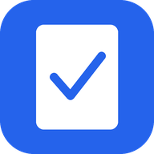

Kamu sedang offline
Halaman ini belum pernah dibuka sebelumnya, jadi belum tersimpan di perangkat. Sambungkan kembali internet lalu coba lagi. Halaman todo yang sudah pernah dibuka tetap bisa diakses tanpa koneksi.
Ke Todo Personal
Halaman ini belum pernah dibuka sebelumnya, jadi belum tersimpan di perangkat. Sambungkan kembali internet lalu coba lagi. Halaman todo yang sudah pernah dibuka tetap bisa diakses tanpa koneksi.
Ke Todo Personal